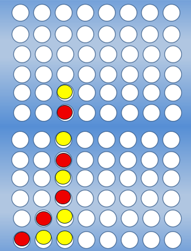
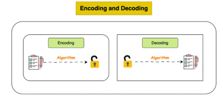

Welcome to the Programming Languages page! On this page you will find the programming languages I have used throughout my time as a computer scientist. I will talk about my experience with these languages and projects (when possible) that show my work with the language.

Java
When it comes to Programming Languages I have experience with, especially with in-depth projects, Java defiantly takes the cake.
Two of the big projects I did in college used Java as its backbone. The first, and my personal favorite, was ExtendedConnectX (Link), this was a Connect “Four” board that could be extended to make the game larger or smaller in scale to make for unique games.
This project also introduced the idea of multiple implementations by coding to an interface.
The second project dealt with working in a Pizzeria (Link) using Java along with SQL and a DynamoDB database to manage pizzeria supplies and orders.
When not working on projects (such as this website), I frequently head back and make programs so I can remember the basics (and test my knowledge).
My personal favorite programs to make are calculators, since you can handle calculations different ways. For instance, a program that allows users to enter numbers and symbols through a command line could handle calculation differently to
a program that lets users pass a whole file of calculations through.
C
In the second Computer Science class I took at Clemson, C was introduced to me. C was a curve ball at first, having only used Java and C++ beforehand, yet I find it to be an incredibly useful language.
C keeps things quite straightforward, you might have to work harder to get certain results compared to certain high-level languages, but you really get to understand the core logic of what your programs are doing.
The C projects Clemson provided were incredible fun to solve, a personal favorite of mine dealt with Portable Pixel Format (PPM) images (Link).
The idea of the project was that you read in images that were altered (extremely blurry, discolored, shifted) and shift the pixels until you could output the original photo (the reward of seeing the original image was blissful!).

C++
While in Clemson, the three main languages you would find being taught were Java, C , and C++. In my honest opinion, it felt like there should have been more courses using C++.
My reasoning is simple, its because of how enjoyable the language is to use! A very early project I used C++ for was Encoding and Decoding (Link) strings of information using a unique key.
Although simple, I felt like this was an extremely useful project, since it gave me a cool idea of how to keep information safe.
One thing I can say I love about C++ is the versatility of the language, having the option to choose between using Object-Oriented programming or simple Generic Programming, allows for a great deal of creative freedom(and not having yourself confined to just one thing).
JavaScript
For my Computer Science senior project, my four teammates and I built a website designed to reward good drivers for safe driving (more details on this project are in the technology tab).
One of the languages used in this project was JavaScript (JS). While I wasn’t the main person in charge of the JavaScript portion, I got to see firsthand how it was used to make the site more interactive and responsive for users.
I know its main function was to handle things on the frontend, like updating parts of the page dynamically and making sure the experience feel smooth without constantly reloading.
That exposure gave me a better understanding of how JS connects the frontend and backend, especially when combined with HTML, CSS, and API calls.
Alongside this project, I’ve also explored JavaScript on my own in smaller projects, which has helped me get more comfortable with its quirks and flexibility.
SQL
I got hands-on experience with SQL during a Java project where I built a system for managing a pizzeria.
The database kept track of inventory and customer orders. I wrote queries that created tables for toppings, as well as views that gave insights like the most popular topping, profit by pizza, and profit by order type.
It was interesting to see how a few well-written queries could pull out useful business data from simple tables. Working on this project taught me the importance of designing a database that makes queries efficient and easy to work with.
Python
Python, as I’ve come to realize, is a language sought by many employers. I however only know the basics of the language, such as how spacing is extremely important, and that it’s very high-level (it feels like you’re writing sentences and the code just works).
In Clemson, I was told by a professors I respected to avoid this language as it would teach "bad practices and techniques" that couldn't be used across multiple languages. I understand there thought process, with the little Python I’ve used , it’s quite easy to throw something together that works (and forget about the speed or optimization in other languages).
I do regret not taking a class that used Python in school; however, there’s nothing stopping me from learning it in my free time, now is there?
Prolog
Prolog, a language thats all about using recursion to find solutions. I found this language extremely interesting in practice.
Although the idea of making a large amount of self-referential call is headache inducing, when it works it makes me feel like a million bucks.
It’s fascinating that this course was a requirement for me to graduate from Clemson, but not a course that used Python (I guess the power and knowledge of recursion was more important 😅).